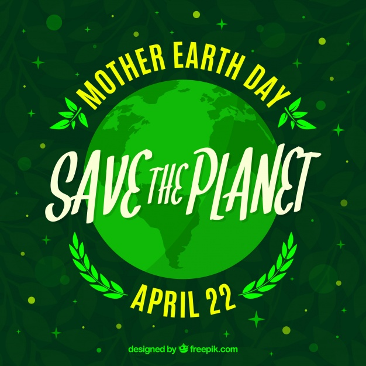
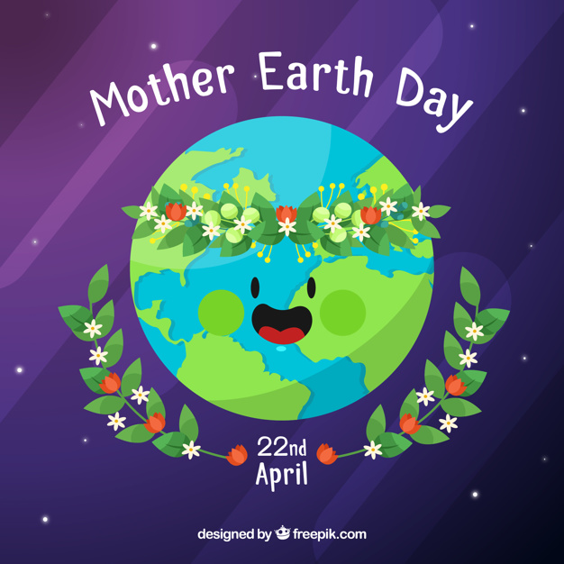
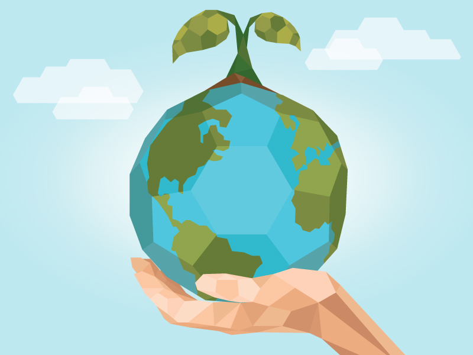

4 "F"
Programacion
Desarrolla Aplicaciones Moviles
Lic.Jose Antonio Gomez Hernandez
Celebramos el Dia Internacional de la Madre Tierra para recordar que el planeta y sus ecosistemas nos dan la vida y el sustento. Con este dia, asumimos, ademas, la responsabilidad colectiva, como nos recordaba la Declaracion de Rio de 1992, de fomentar esta armonia con la naturaleza y la Madre Tierra.
Este dia nos brinda tambien la portunidad de concienciar a todos los habitantes de planeta acerca de los problemas que afectan a la Tierra y a las formas de vida que en el se desarrollan.
La historia del Día de la Tierra
El origen de este día, celebrado mundialmente (aunque no en todas partes), se encuentra en Estados Unidos, durante los 70. Y está asociado, sin duda, a un nombre: Gaylord Nelson. La historia cuenta (a pesar de los curiosos rumores sobre Lenin) que fue este político quién aprovechó un miércoles para organizar una manifestación en defensa del medio ambiente y el ecologismo. Un momento muy estudiado y que venía cociéndose desde la década de los 60 debido a la creciente irresponsabilidad ambiental del gobierno de Estados Unidos. Ya habían gérmenes plantados desde la comunidad científica y estudiantil. Ese miércoles los estudiantes y trabajadores se unieron en una manifestación pacífica que pretendía rendir homenaje y mostrar la preocupación colectiva sobre temas como el medio ambiente, la superpoblación o la conservación de la biodiversidad.
Y fue todo un éxito. Debido a la participación de dos mil universidades, diez mil escuelas y centenares de comunidades, el gobierno Estadounidense decidió crear Agencia de Protección Ambiental. Este solo fue el comienzo. Durante el 72, la cumbre de la Tierra, en Estocolmo, puso de manifiesto la manifiesta necesidad de una ley medioambiental internacional más comprometida. En los noventa, la celebración del Día de la Tierra ya estaba mucho más generalizada fuera de Estados Unidos y a día de hoy se celebra a nivel mundial. Es más, la plataforma Día de la Tierra trata de promover la concienciación medio ambiental mientras que numerosos colectivos y entidades participan a su manera. Por ejemplo, Google promueve el día con un doodle y una actividad especial mientras que en empresas como Apple, bastante comprometidas con el medio ambiente, aprovechan este día para mostrar su informe de compromiso medioambiental. Gracias a iniciativas como esta, el mundo ha ido tomando una concienciación medioambiental que antes de los 70 era completamente inexistente o muy vaga. Gracias a esto hemos puesto remedio y frenado algunos de los problemas más acuciantes.
La Tierra que Habitamos
La tierra que habitamos, así titula la Organización de Naciones Unidas (ONU) las actividades para la conmemoración del Día Internacional de la Tierra, este domingo 22 de abril.
La Madre Tierra, como la llaman en muchas culturas, enfrenta quizá los años más difíciles desde sus inicios. Este día, menciona el comunicado de la ONU, será para recordar que el planeta y sus ecosistemas nos dan la vida y el sustento.
la Tierra cumple 4,600 millones de años aproximadamente, mencionan los científicos. En todo este tiempo, el planeta ha sido capaz de regenerarse y tomar la distribución de los continentes hasta como ahora los conocemos. Todo ese recorrido en el tiempo, ha superado una serie de cambios que impactaron en la fauna y flora.

Dialogo sobre armonia con la naturaleza
El 23 de abril de 2018 se realizó en la sede de las Naciones Unidas en Nueva York, el 8° Diálogo Interactivo sobre
Armonía con la Naturaleza, en ocasión de la conmemoración del Día Internacional de la Madre Tierra.
El evento fue convenido por el Presidente de la Asamblea General, Miroslav Lajcak, quien destacó la importancia del
Diálogo para intercambiar ideas sobre desarrollo y patrones de producción y consumo sostenibles en armonía con la naturaleza.
Durante la jornada, se discutió sobre cómo los marcos legales y económicos de la Jurisprudencia de la Tierra impactan la
implementación de patrones de producción y consumo sostenibles en Armonía con la Naturaleza.
El Diálogo se realizó con el objetivo de inspirar a los ciudadanos y las sociedades a reconsiderar la relación que mantienen
con la naturaleza, acorde a la meta 12.8 de los Objetivos de Desarrollo Sostenible con respecto a los patrones de consumo y
producción sostenibles.

Hacia una Tierra sostenible
La gestión integrada de paisajes requiere comprender los diferentes impactos del uso de la tierra y equilibrar los intereses a menudo contradictorios de los diferentes grupos involucrados.
Imaginemos que usted forma parte del gobierno del país X en África subsahariana. Desea cumplir con el Objetivo de Desarrollo Sostenible No. 1 que reza: “acabar con la pobreza en todas sus formas en todas partes".
Sin embargo, es consciente de la necesidad de implementar todos los 17 Objetivos, incluido el Objetivo 15, que busca: "Gestionar sosteniblemente los bosques, luchar contra la desertificación, detener e invertir la degradación de las tierras y detener la pérdida de biodiversidad”.
Imagine que usted tiene una gran extensión de pastizales secos donde casi nadie vive y quiere explotarlos de mejor manera, en beneficio de su gente.
